83%precision5 false flags, all caught by owner confirm
1 IDthrough a 1.5 s blackoutgap 1.7 s, same track #0
9 / 9person crop rejectedSAM mislabelled a person "dog"
Production code path (worker/src/sam.ts, prompts.ts, meta.ts) against the live Meta API, 2026-11-04. Spark model: muse-spark-1.3. Matching cost: $0.48 for 87 comparisons.
Confusion matrix: Muse Spark verdict vs ground truth
Separation: every top-ranked true match beat every false flag
the owner's petother animal or person
One dot per comparison; rows inside each lane are trials 1–3. Rejections sit at 0. The shaded band is where all false flags fell; the highest-scoring dot in every case-trial is the true pet, which is why sorting cards by strength put the right dog first 9/9 times.
Trade-off if the product auto-flagged instead of asking the owner
At 0.70 the matcher would be 100% precise with 81% recall. We keep the owner in the loop instead: every candidate is shown, sorted by strength, and nothing counts as a sighting until the owner confirms it.
Doorbell conditions: does it still find the right dog?
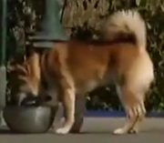
Clean crops
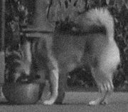
Night vision
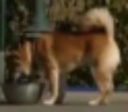
Distant
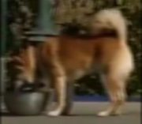
Running
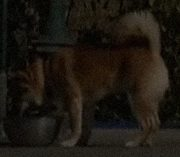
Dusk, no IR
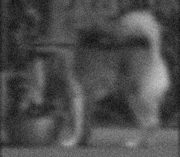
Worst case
accuracyrecallprecision
Condition
Accuracy
Recall
Precision
Right dog ranked #1
Smallest winning margin
Clean crops (baseline, trial 1)
93%
100%
82%
3 / 3
+0.35
Night vision (IR greyscale + noise)
93%
89%
89%
3 / 3
+0.35
Distant: 1/4 resolution
90%
89%
80%
3 / 3
+0.17
Running: 9-px motion blur
90%
89%
80%
3 / 3
+0.13
Dusk, no IR: 35% exposure
93%
89%
89%
3 / 3
+0.25
Worst case: IR + 1/4 res + blur
86%
67%
86%
3 / 3
+0.05
Same 29 labelled comparisons and production matcher; only the camera crops are degraded (the owner's reference photo stays clean, as a phone photo would). The right dog stayed the top-ranked candidate in all 18 of 18 case-conditions, every margin strictly positive. Recall falls to 67% in the worst case, and the thinnest margin was +0.05 (white dog vs white hound, worst case): at night the owner's confirm step matters most. Images are generated deterministically by eval/degrade.py.
Case "Biscuit": reference vs every candidate, 3 trials
✓ = Spark's verdict agrees with the ground-truth label (checked by eye); hover a verdict for Spark's rationale. Ground truth for "THE PET" = same SAM track in the same continuous shot.
Case "Miso": reference vs every candidate, 3 trials
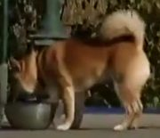
Reference photo Red-and-cream shiba inu, curled tail, small to medium size.
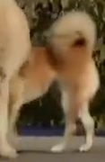
THE PET · t9_f358
✓ match 0.70✓ match 0.62✓ match 0.65
THE PET · t9_f383
✓ match 0.95✓ match 0.93✓ match 0.90
THE PET · t9_f366
✓ match 0.62✗ reject 0.20✗ reject 0.20
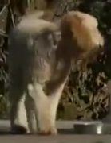
other · t8_f343
✗ match 0.60✗ match 0.60✓ reject 0.72
other · t6_f241
✓ reject 0.97✓ reject 0.97✓ reject 0.96
other · t14_f572
✓ reject 0.85✓ reject 0.85✓ reject 0.90
other · t14_f602
✓ reject 0.92✓ reject 0.90✓ reject 0.90
other · t7_f308
✓ reject 0.90✓ reject 0.88✓ reject 0.88
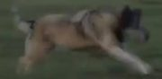
other · t12_f489
✗ match 0.55✓ reject 0.78✓ reject 0.75
other · t12_f442
✓ reject 0.10✓ reject 0.15✓ reject 0.10
✓ = Spark's verdict agrees with the ground-truth label (checked by eye); hover a verdict for Spark's rationale. Ground truth for "THE PET" = same SAM track in the same continuous shot.
Case "Luna": reference vs every candidate, 3 trials
Reference photo White short-haired dog, tall upright ears, red collar, slim build.
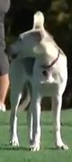
THE PET · t6_f255
✓ match 0.85✓ match 0.88✓ match 0.85
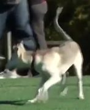
THE PET · t6_f262
✓ match 0.75✓ match 0.75✓ match 0.75
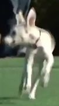
THE PET · t6_f269
✓ match 0.85✓ match 0.75✓ match 0.85
other · t7_f308
✓ reject 0.82✗ match 0.65✗ match 0.65
other · t8_f343
✓ reject 0.85✓ reject 0.90✓ reject 0.85
other · t9_f383
✓ reject 0.97✓ reject 0.97✓ reject 0.97
other · t14_f572
✓ reject 0.92✓ reject 0.93✓ reject 0.92
other · t14_f602
✓ reject 0.92✓ reject 0.94✓ reject 0.92
other · t12_f489
✓ reject 0.87✓ reject 0.93✓ reject 0.88
other · t12_f442
✓ reject 0.10✓ reject 0.10✓ reject 0.10
✓ = Spark's verdict agrees with the ground-truth label (checked by eye); hover a verdict for Spark's rationale. Ground truth for "THE PET" = same SAM track in the same continuous shot.
SAM 3.1 persistence: same identity before and after a full blackout
Each tick is a frame where SAM 3.1 detected the dog (10 fps). Original: 117 detections, one track. With the frame fully black from 4.0–5.5 s: 102 detections, still one track (#0) with a single 1.7 s gap: no new ID was created when the dog reappeared.
SAM 3.1 on a 76 s edited dog-park montage: 16 tracks, every one checked by eye
one dog throughoutproblemuncertain
3 clean, 9 carried an ID across a hard cut onto a different dog, 1 labelled people "dog", 1 dark blob, 2 uncertain. Inside each continuous shot identities held; the hard cuts of an edited news montage are where SAM 3.1's re-identification failed. Real camera footage has no cuts (the doorbell clip: 1 clean track, and the same ID through a blackout), and the product matches each track's best still independently with the owner confirming. One knock-on effect: the coordinator reads track spans, so track #8's 38.5 s span (which crosses a cut) became "drinking for 38.5 s" in a plan.
Spark tool loop: the model chose the tools, in order
suggest_next_search → make_poster
Search Elm St car park NOW - Biscuit moving away from dog park
Window: ASAP 6:30 PM - 8:00 PM tonight · Area: Elm St car park and surrounding quiet side streets, avoiding main traffic roads
Two sightings show track from Dog park water fountain at 5:42 PM to Elm St car park at 6:18 PM. Long pause at Elm St suggests sheltering there, and being scared of traffic she will likely stay off main roads near parked cars and doorways.
Go immediately to Neighbour's doorbell, Elm St car park - last seen 6:18 PM with 12.3s dwell
Search on foot with treats, water and slip lead, call calmly - friendly but scared, do not chase
Check under cars, doorways, hedges and quiet alleys - scared of traffic so avoiding busy roads
Show locals the 5:42 PM water fountain photo and ask to check doorbell/dash cams after 6:18 PM
Leave flyers at Elm St houses with red-collar apricot goldendoodle description
Input: two confirmed sightings (5:42 PM dog park, 6:18 PM Elm St doorbell) plus the owner's note "scared of traffic". Wall time 55 s including Muse Image. Raw: eval/results/plan.json.